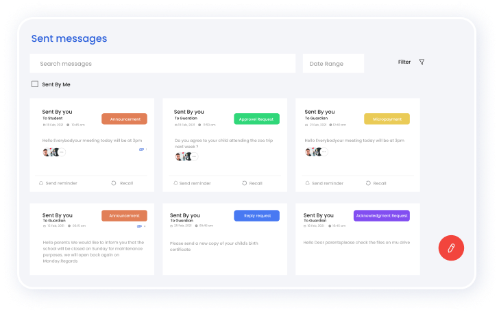

Top features to look out for in a
Teachers App
The market offers a wide range of teachers apps to help teachers improve their communication with parents and better engage with students. But as the teacher's app is an extension of the school communication software, it's the school that decides which software to choose for their communication purposes.
However, as teachers are also among the ones who will use the software, the teachers can input their suggestions and help the school in the decision process. So here are a few key features you might want to consider before deciding to go for a teacher's app for your school communication needs.
Intuitive Collaborative Space
As teachers need to actively connect with parents and students, the teacher's app must provide a clutter-free interface (UI) that makes it easier for teachers to use it every day. In addition, the software must have a smooth and compelling user interface and promote instant collaborative space. All these will enable teachers to efficiently communicate with parents and students from the same platform without any issues.
So while choosing a teacher's app, the school must find software that enables teachers to conduct all their communication activities and more. Hence, while deciding on a teacher's app, the school must consult with teachers and request to share the kind of features they might want in the software before investing money and time.
In simpler words: the teacher's app should be easy and provide robust communication features. It must have the option to communicate with parents and students from anywhere easily. In addition, it must showcase a modern and minimalistic user-interface design that is engaging and must outperform traditional platforms like emails and SMS in terms of functionality, features and ease of usage. The teacher's app should enable teachers to express themselves freely without any limitations.

Instant Chat facility
When it comes to communication, instant chat is a distinctive feature that should be present in teachers apps. The main advantage of an inbuilt chat feature is that it will enable teachers to have direct one-on-one private conversations with any parents without the need to share personal phone numbers or email ids. Moreover, this significantly improves teacher-parent engagement as it removes the barriers and facilitates more connected teachers and parents.
Along with that, the teacher app must also showcase a database of all students and their parents with communication details like emails and phone numbers. Thus, the teacher can instantly access and initiate conversations with parents during emergencies if they are not available online.
Instant Communication Features
The teachers must send school announcements, circulars, and other important messages to parents on time. So the teacher's app must have built-in features to create school announcements, send bulk exam reports on time. Moreover, all the messages must also get delivered to the parents in the same space, so parents can review messages, respond and initiate further conversations if necessary.
But different school communication software will account for various use cases even though they all serve a common purpose. So, it's a good idea to check if the teacher's app you're interested in provides all these features.
Manage communication
The ability to overview and manage engagement and communication is another feature shared by the major school communication software.
This enables schools to tap into insightful data about who is communicating with who in your entire school.
Secure Cloud Storage
Access free cloud storage and store all your school documents and files. Share homework, class materials, score sheets, and other documents with students and parents so they can access them at any time.
Access Engagement report
The teacher's app must have built-in engagement reports to get to know and measure parent engagement. Teachers can use parent engagement to create a comprehensive picture of parents overall feelings on the classroom conditions, the teaching methods implemented and more.